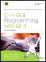

|  |
|
The Only Official, Best-Practice Guide to Qt 4.3 Programming
Using Trolltech's Qt you can build industrial-strength C++ applications that run natively on Windows, Linux/Unix, Mac OS X, and embedded Linux without source code changes. Now, two Trolltech insiders have written a start-to-finish guide to getting outstanding results with the latest version of Qt: Qt 4.3.
Packed with realistic examples and in-depth advice, this is the book Trolltech uses to teach Qt to its own new hires. Extensively revised and expanded, it reveals today's best Qt programming patterns for everything from implementing model/view architecture to using Qt 4.3's improved graphics support. You'll find proven solutions for virtually every GUI development task, as well as sophisticated techniques for providing database access, integrating XML, using subclassing, composition, and more. Whether you're new to Qt or upgrading from an older version, this book can help you accomplish everything that Qt 4.3 makes possible.
Completely updated throughout, with significant new coverage of databases, XML, and Qtopia embedded programming
Covers all Qt 4.2/4.3 changes, including Windows Vista support, native CSS support for widget styling, and SVG file generation
Contains separate 2D and 3D chapters, coverage of Qt 4.3's new graphics view classes, and an introduction to QPainter's OpenGL back-end
Includes new chapters on look-and-feel customization and application scripting
Illustrates Qt 4's model/view architecture, plugin support, layout management, event processing, container classes, and much more
Presents advanced techniques covered in no other book–from creating plugins to interfacing with native APIs
Includes a new appendix on Qt Jambi, the new Java version of Qt